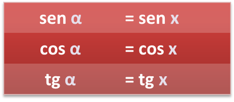

- Ángulos complementarios, α y 90o – α:
 |
 |
- Ángulos suplementarios, α y 180o - α:
 |
 |
- Ángulos cuya diferencia es 180o, α y 180o + α:
 |
 |
- Ángulos opuestos, α y – α:
- Ángulos mayores que 360o. Si x de dividir entre 360o, entonces

Ejemplo: si sen 65º = 0,9, calcula cos 25º, sen 295º, sen 425º , sen 115º y sen 245º .
- cos 25º = sen 65º = 0,9
- sen 295º = sen (- 65º )= - sen 65º = - 0,9
- sen 425º = sen 65º = 0,9
- sen 115º = sen (180º - 65º )= sen 65º = 0,9
- sen 245º = sen (180º + 65º )= -sen 65º = -0,9
NOTA. Debes memorizar esta tabla:

Ejercicio. Calcula sin calculadora:
a) sen 150o
b) cos 225o
c) cosec(7π/6)
d) tg (-495o)
Soluciones: a) 1/2; b) -√2/2; c) -2; d) 1